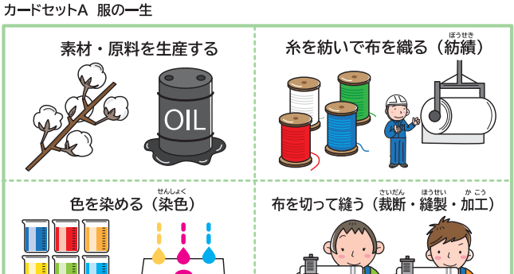
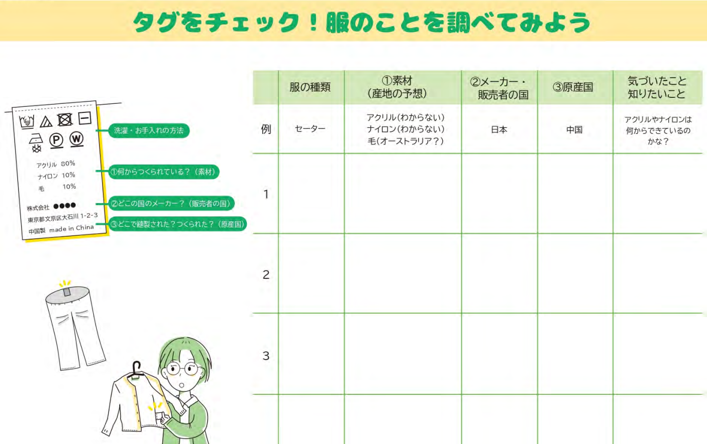
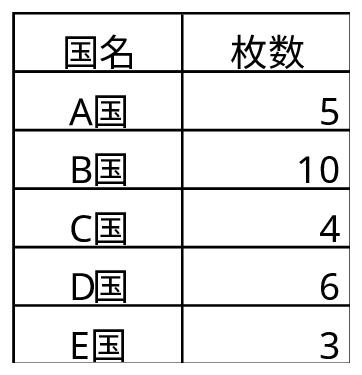
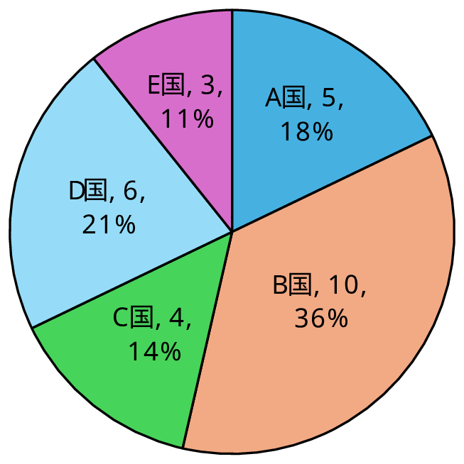
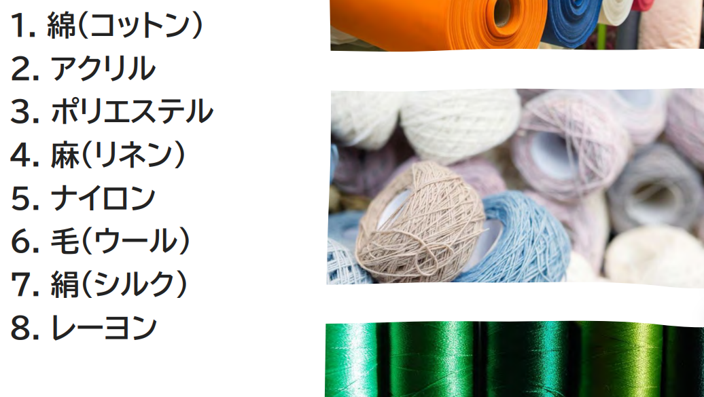

第1部：服の一生を知る！（服のサプライチェーン）
●私たちが着ている服は、どのような工程を経て手元に届くのか？
私たちのクローゼットにある服が、どのように生まれ、どうやって手元まで届くのか調査し、服のサプライチェーンを理解します。
・用語の解説
サプライチェーン（供給連鎖）：原材料の調達から製造、物流、販売、最終消費者に届くまでの「モノや情報の流れ」全体のこと
○ワーク（調べ学習）服のサプライチェーン
服のサプライチェーンは、どのような工程となっているか調べてみましょう。
そして、消費者庁の教材（10枚のカード）を順番に並び替えてみよう。

・参考サイト
ファッション業界のサプライチェーン徹底解説（FashionUnited）
ファッション・サプライチェーン：知っておくべきすべてのこと（オラクル）
●服を調べて見よう（タグのチェック）
私たちが着ている服の品質表示タグに書かれている内容を調べて見ましょう。
そして、どのような傾向や特徴が読み取れるか分析を行っていきましょう。
○ワーク（調べ学習）品質表示タグをチェック
下記のような表を作成し、調べた内容を記録していこう。
出典：タグをチェック！服のことを調べてみよう（消費者庁）

○ワーク（データ分析）服の原産国
品質表示タグに書かれた情報の特徴を読み取ろう！
例題 服はどの国で作られているのか？
調査した結果から原産国毎に服の枚数を数えます。例えば、下記のような結果だったとしましょう。
表 原産国別の服の枚数

例えば、円グラフを作成することにより、原産国毎の占める割合を確認します。

図 原産国別の服の枚数
図から、B国が最も服の枚数が多く、全体の36%を占めていることが分かります。
問題
調査した結果から次のことを分析してみよう！
・どの原産国の服が多いか分析しよう。
・1枚の服を作るのに、何種類の素材が使用されているのか分析しよう。
問題（発展）
・輸入衣料の国別統計を調べて、どの原産国からの輸入量が多いか分析しよう。
・原産国を世界地図にプロットしてみよう。
参考サイト
○ワーク（調べ学習）原材料の生産国
服は様々な繊維からできた素材でつくられています。そのうち、石油を原材料につくられる繊維はどれでしょうか？

出典：消費者庁
参考サイト
問題（発展）
・繊維の原材料となる綿花、亜麻、石油などの生産量が多い国を調べてみよう。
・原材料毎に色分けして、世界地図にプロットしてみよう。
参考サイト
世界の綿花（実綿）生産量 国別ランキング・推移（GLOBAL NOTE）
○ワーク（考察）服のサプライチェーンの考察
世界地図にプロットした綿花等の原材料の生産国、そして、服の原産国から気付いたことを話し合い、服のサプライチェーンについて分かったことをまとめよう。
問題（発展）
・世界地図にプロットした国間の距離を求めてみよう。（世界一周したときの距離も求めておくと良い）